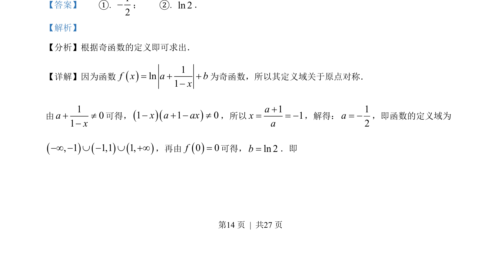
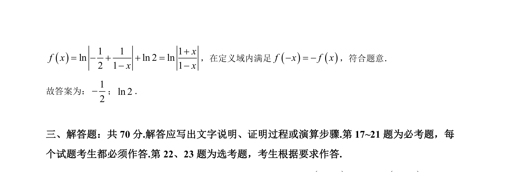

考点：奇函数定义 定义域对称性 对数函数性质
奇函数定义
定义域对称性
对数函数性质
本题通过奇函数定义域对称性及f(0)=0求参数值。


📄 原 PDF 第 14 页：素材/真题/吉林/2008-2024·（吉林）数学高考真题/2022年高考数学试卷（文）（全国乙卷）（解析卷）.pdf
素材/真题/吉林/2008-2024·（吉林）数学高考真题/2022年高考数学试卷（文）（全国乙卷）（解析卷）.pdf